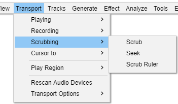

Transport Menu: Scrubbing
Scrubbing or Seeking is the action of moving the mouse pointer right or left so as to adjust the position, speed or direction of playback, listening to the audio at the same time - a convenient way to quickly navigate the waveform to find a particular event of interest.
- Click, or hover, on any menu item in the image to read about that command. Skip the image
- 
Scrub
Selecting Scrub play will put you into Scrub Play mode. Scrub play will not start until you move the cursor horizontally.
Scrubbing is the action of moving the mouse pointer right or left so as to adjust the position, speed or direction of playback, listening to the audio at the same time - a convenient way to quickly navigate the waveform to find a particular event of interest. Speed changes are made by rotating the mouse wheel while scrubbing.
Seek
Selecting this will put you into Seek play mode. Seeking in the audio will start once you move the cursor horizontally.
Seeking is similar to Scrubbing except that it is playback with skips, similar to using the seek button on a CD player. Even if you move the mouse pointer a long way from the current position of the playhead, the playhead will immediately move very close to the mouse pointer, letting you move across the audio rapidly.
Scrub Ruler
The Scrub Ruler command is a toggle which enables you to hide or show the Scrub Ruler (default is on).
The Scrub Ruler, the gray strip immediately below the Timeline is the primary method for scrub or seek play. The Scrub Ruler is set on and displayed by default in Audacity. If you have turned it off you can get it displayed again by right-clicking in the Timeline and selecting from the dropdown menu.